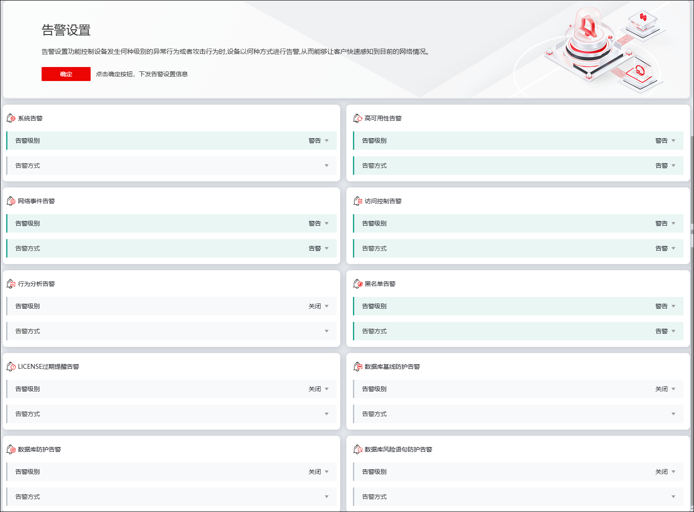

告警设置页面用于设置各安全事件触发告警的最低级别，及选择告警的通知方式。告警方式的规则配置参见 告警方式。
告警级别按6级划分，包括：
1)关闭：不产生相应的日志信息。
2)紧急：造成严重错误导致系统不可用。
3)警报：警报信息。
4)严重：严重错误信息，可能会造成某些功能无法正常工作。
5)错误：一般错误信息。
6)警告：所有攻击行为以及非授权访问（除通信日志外）。
选择
在指定告警类型右侧下拉框中选取触发告警信息的最低告警级别，以及发送告警信息的通知方式，点击【确定】即可。
